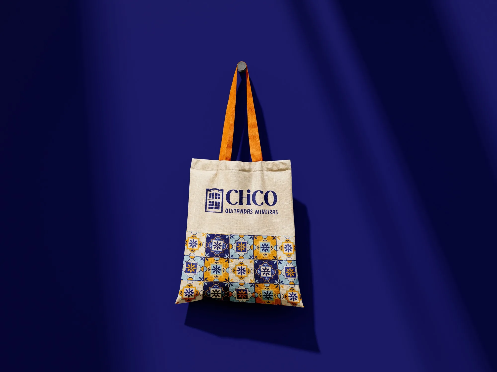
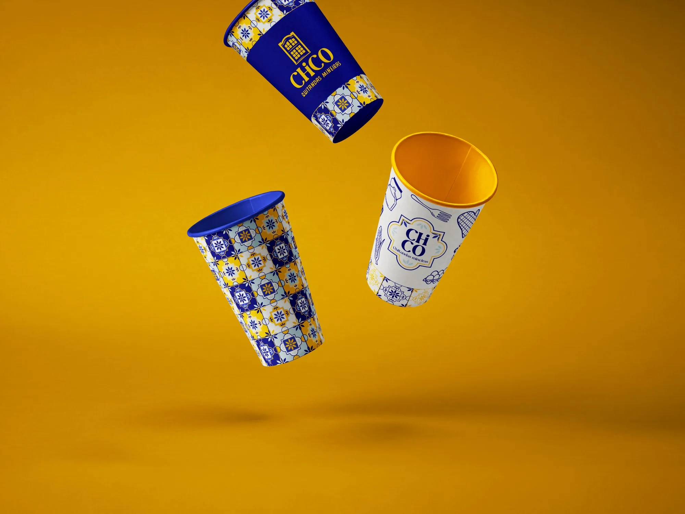
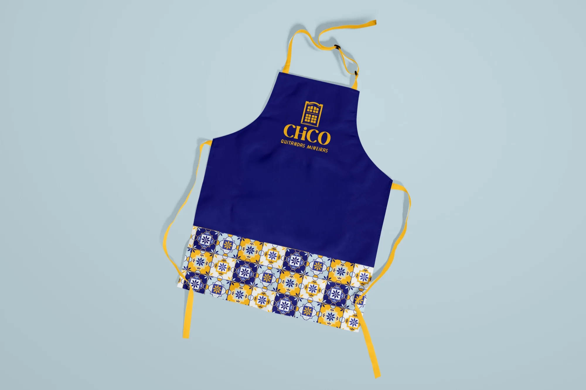
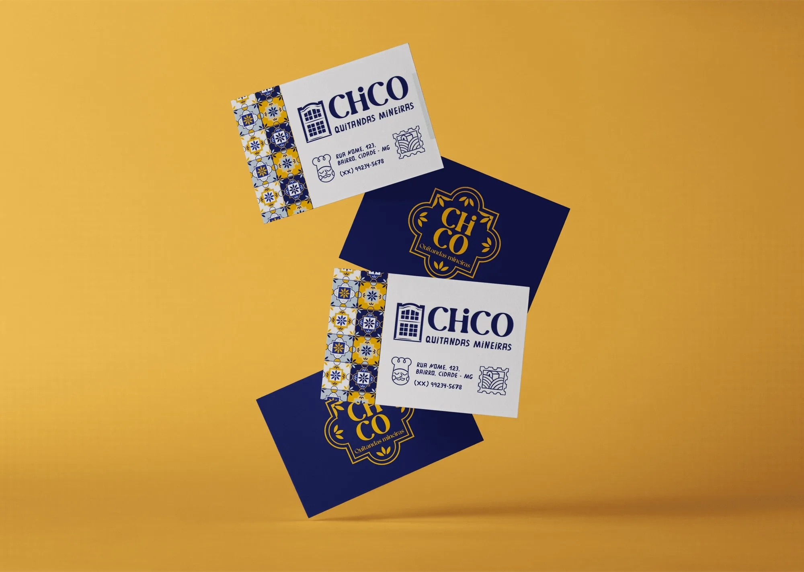
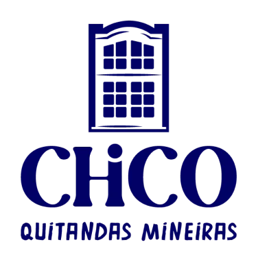
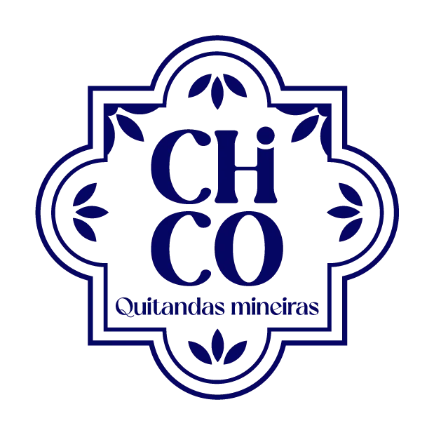
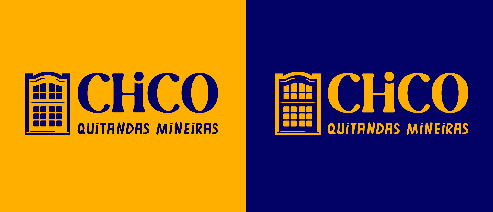
RGB: 1 1 102
CMYK: 99 99 0 60
HEX: 010166
RGB: 255 213 128
CMYK: 0 16 50 0
HEX: FFD580
RGB: 244 244 244
CMYK: 0 0 0 4
HEX: F4F4F4
RGB: 255 175 0
CMYK: 0 31 100 0
HEX: FFAF00
RGB: 191 217 228
CMYK: 16 5 0 11
HEX: BFD9E4
RGB: 42 51 150
CMYK: 72 66 0 41
HEX: 2A3396
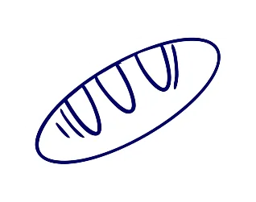
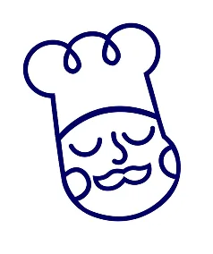
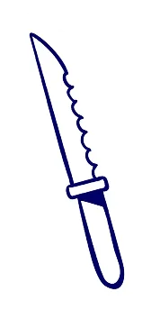
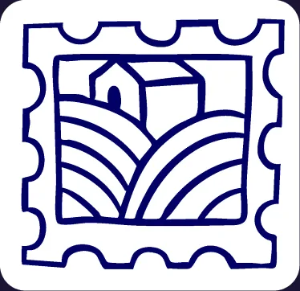
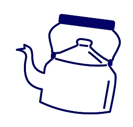
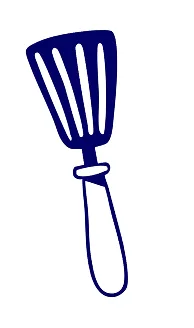
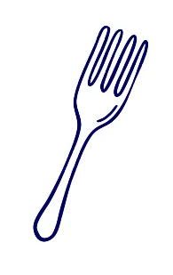
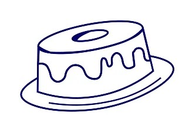
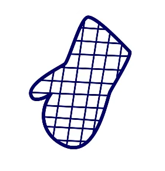
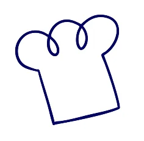
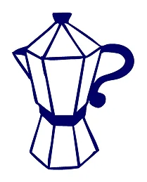